統計學
第6章：常態分佈
實踐大學
2026-09-20
本章概覽
第6章介紹常態分佈——這個連續、鐘形的分佈是統計推論的核心。
| 節次 | 主題 |
|---|---|
| 6-1 | 常態分佈與標準常態分佈；曲線下的面積 |
| 6-2 | 常態分佈的應用；由指定機率求資料值；常態性的判定 |
| 6-3 | 中央極限定理；樣本平均數的分佈；有限母體校正因子 |
| 6-4 | 二項分佈的常態近似 |
本章學習目標
讀完本章後，你應該能夠
- 指出常態分佈的性質。
- 判斷分佈為對稱或偏斜。
- 給定各種 z 值，求標準常態分佈曲線下的面積。
- 將常態分佈變數轉換為標準常態變數，以求其機率。
- 利用標準常態分佈，由指定的百分比求特定的資料值。
- 運用中央極限定理，解決大樣本之樣本平均數的問題。
- 運用常態近似計算二項變數的機率。
第 6-1 節：常態分佈
緒論
隨機變數可分為離散與連續兩類。第5章處理離散變數；連續變數可在任兩個給定值之間取任意值——例如成年男性的身高、老鼠的體溫、成人的膽固醇值。
許多連續變數呈鐘形分佈，稱為近似常態分佈的變數。若研究者測量 100 位成年女性的身高並繪製直方圖，接著不斷增加樣本數並縮小組距，直方圖會逐漸逼近一條平滑曲線，即常態分佈曲線（圖 6-1）。它也稱為鐘形曲線或高斯分佈曲線，以數學家 Carl Friedrich Gauss（1777–1855）為名。
沒有任何變數能完全符合常態分佈，因為常態分佈是一種理論分佈；但由於實際資料與它的偏離非常小，它仍然十分有用。
緒論
圖 6-1 成年女性身高分佈的直方圖與常態模型
緒論
normal_panel <- ggplot(data.frame(height = c(140, 186)), aes(height)) +
stat_function(fun = dnorm, args = list(mean = 163, sd = 6.5),
colour = "#2c4a6e", linewidth = 1.2) +
labs(title = "(d) 常態分佈", x = "身高（公分）", y = "")
grid.arrange(height_hist(100, 5, "(a) n = 100"),
height_hist(1000, 3, "(b) n 增大"),
height_hist(20000, 1, "(c) n 再增大"),
normal_panel, ncol = 2)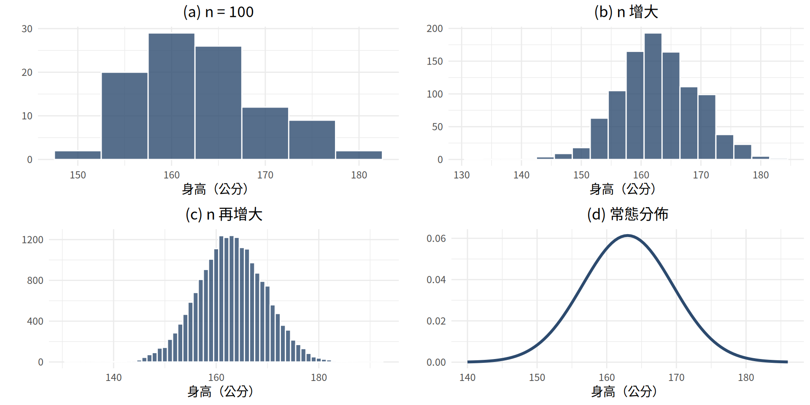
常態分佈
常態分佈
若一隨機變數的機率分佈圖形為連續、鐘形且對稱，則稱其為常態分佈，該圖形稱為常態分佈曲線。
常態分佈的數學方程式為
y = \frac{e^{-(X-\mu)^2/(2\sigma^2)}}{\sigma\sqrt{2\pi}}
其中 e \approx 2.718、\pi \approx 3.14、\mu 為母體平均數、\sigma 為母體標準差。在應用統計中，我們以查表或軟體取代直接使用此方程式。
常態分佈曲線的形狀
常態分佈曲線的形狀與位置由兩個參數決定：平均數與標準差（圖 6-3）。
normal_curve_df <- function(mu, sigma, label) {
x <- seq(-8, 10, length.out = 400)
data.frame(x = x, density = dnorm(x, mu, sigma), label = label)
}
same_mean <- rbind(normal_curve_df(0, 1, "mu = 0, sigma = 1"),
normal_curve_df(0, 2, "mu = 0, sigma = 2"))
same_sd <- rbind(normal_curve_df(0, 2, "mu = 0, sigma = 2"),
normal_curve_df(2, 2, "mu = 2, sigma = 2"))
shape_panel <- function(curves, title)
ggplot(curves, aes(x, density, colour = label)) + geom_line(linewidth = 1) +
labs(title = title, x = "x", y = "", colour = "") +
theme(legend.position = "bottom")
grid.arrange(shape_panel(same_mean, "(a) 平均數相同、標準差不同"),
shape_panel(same_sd, "(b) 平均數不同、標準差相同"),
ncol = 2)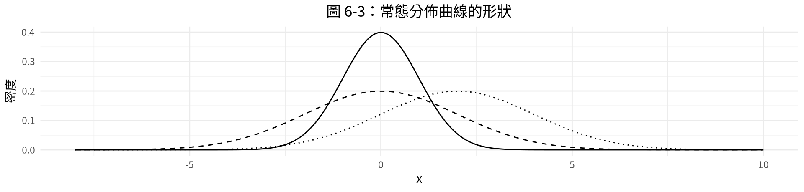
常態分佈的性質
理論常態分佈的性質總整理
- 常態分佈曲線呈鐘形。
- 平均數、中位數與眾數三者相等，且位於分佈的中央。
- 常態分佈曲線為單峰（只有一個眾數）。
- 曲線對稱於平均數；通過中央的垂直線兩側形狀完全相同。
- 曲線是連續的：沒有間斷或空隙。對每一個 X 值都有對應的 Y 值。
- 曲線永不接觸 x 軸；無論向左右延伸多遠都不會相交，只會愈來愈接近。
- 常態分佈曲線下的總面積等於 1.00，即 100\%。
- 距平均數 1 個標準差內的面積約為 0.68，2 個標準差內約為 0.95，3 個標準差內約為 0.997。
常態分佈曲線下的面積
圖 6-4——上述第 8 點的面積即為 3-2 節的經驗法則。
z_grid <- seq(-4, 4, length.out = 800)
normal_curve <- data.frame(z = z_grid, density = dnorm(z_grid))
shade <- function(lower, upper, fill)
geom_area(data = filter(normal_curve, z >= lower, z <= upper),
fill = fill, alpha = 0.6)
ggplot(normal_curve, aes(z, density)) +
shade(-1, 1, "#2c4a6e") + shade(1, 2, "#5b8bbd") + shade(-2, -1, "#5b8bbd") +
shade(2, 3, "#a9c6e0") + shade(-3, -2, "#a9c6e0") +
geom_line(linewidth = 1) +
annotate("text", x = c(-0.5, 0.5), y = 0.15, label = "34.13%") +
annotate("text", x = c(-1.5, 1.5), y = 0.05, label = "13.59%") +
annotate("text", x = c(-2.5, 2.5), y = 0.02, label = "2.15%") +
scale_x_continuous(breaks = -3:3) +
labs(title = "1、2、3 個標準差內約各佔 68%、95%、99.7%",
x = "z", y = "")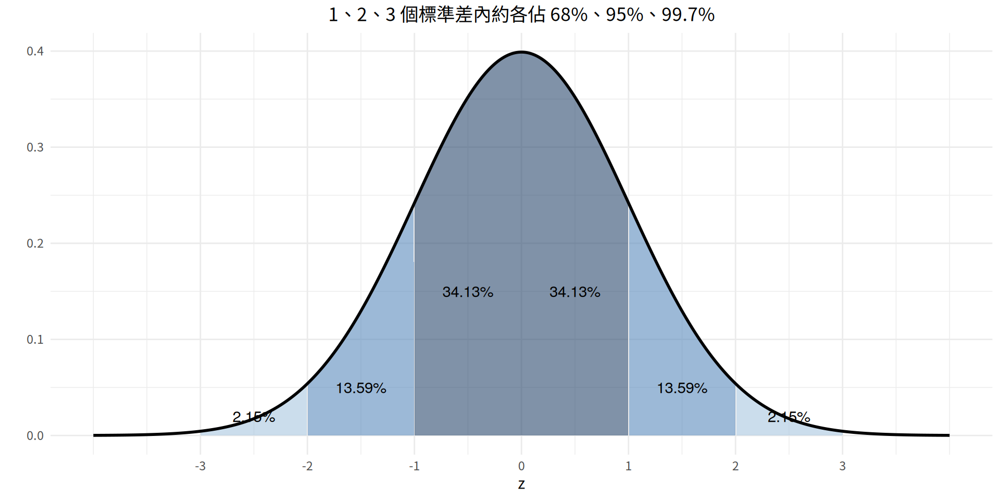
對稱分佈與偏斜分佈
對稱分佈與偏斜分佈
- 當資料值平均地散佈在平均數兩側時，此分佈為對稱分佈。常態分佈即為對稱分佈。
- 當大多數資料值落在平均數右側時，分佈為負偏（左偏）分佈：平均數在中位數左側，且兩者皆在眾數左側。
- 當大多數資料值落在平均數左側時，分佈為正偏（右偏）分佈：平均數在中位數右側，且兩者皆在眾數右側。
曲線的「尾巴」指出偏斜的方向（向右為正偏，向左為負偏）。
對稱分佈與偏斜分佈
圖 6-5 常態分佈與偏斜分佈
skewed_panel <- function(shape, title, mirror = FALSE) {
x <- seq(0.001, 12, length.out = 400)
density <- dgamma(x, shape = shape, rate = 1)
if (mirror) x <- max(x) - x
ggplot(data.frame(x, density), aes(x, density)) +
geom_line(colour = "#2c4a6e", linewidth = 1) +
labs(title = title, x = "x", y = "")
}
symmetric_panel <- ggplot(normal_curve, aes(z, density)) +
geom_line(colour = "#2c4a6e", linewidth = 1) +
labs(title = "(a) 常態", x = "x", y = "")
grid.arrange(symmetric_panel, skewed_panel(3, "(b) 負偏", TRUE),
skewed_panel(3, "(c) 正偏"), ncol = 3)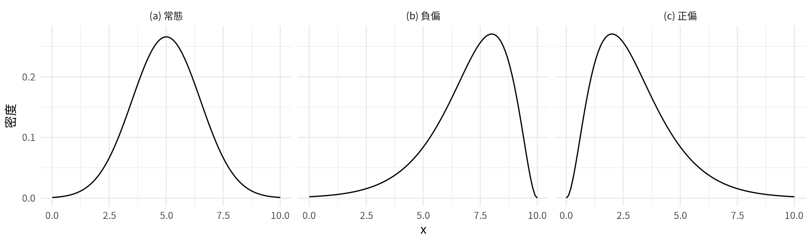
標準常態分佈
每個常態分佈變數都有自己的平均數與標準差，因此每個變數都需要一張面積表。為簡化此情況，統計學家使用標準常態分佈。
標準常態分佈
標準常態分佈是平均數為 0、標準差為 1 的常態分佈。
標準常態分佈的方程式為
y = \frac{e^{-z^2/2}}{\sqrt{2\pi}}
標準分數
z 分數（標準分數）公式
z = \frac{\text{數值} - \text{平均數}}{\text{標準差}} \qquad\text{或}\qquad z = \frac{X - \mu}{\sigma}
- 此公式與 3-3 節所用者相同。
- X 值經轉換後稱為 z 值。z 值（或 z 分數）代表某個 X 值距離平均數幾個標準差。
- 附錄 A 的 表 A-4 提供 z 值由 -3.49 到 3.49 之標準常態曲線下面積（四位小數）。
標準常態分佈
圖 6-6 標準常態分佈
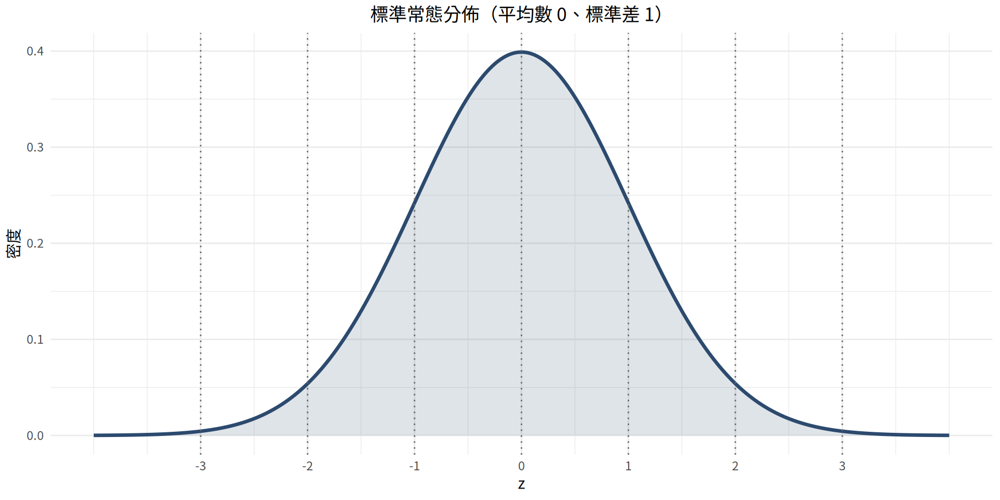
求標準常態分佈曲線下的面積
建議採用兩步驟程序：
步驟 1 畫出常態分佈曲線並將所求面積著色。
步驟 2 在程序表中找到對應的情形，依指示計算。
程序表——求標準常態分佈曲線下的面積
- 某 z 值的左側： 查表找出該 z 值，直接使用表上的面積。
- 某 z 值的右側： 查表找出該 z 值，再以 1 減去該面積。
- 兩個 z 值之間： 查出兩個 z 值的面積，再相減。
三種基本題型全部整理於程序表中。
以 R 求標準常態面積
本課程以 R 取代表 A-4。程序表的三種情形對應三個 R 運算式。
重要的 R 函數
pnorm(z)——z 左側的面積1 - pnorm(z)或pnorm(z, lower.tail = FALSE)——z 右側的面積pnorm(z2) - pnorm(z1)——z_1 與 z_2 之間的面積qnorm(p)——左尾面積為 p 的 z 值（pnorm的反函數）
範例 6-1
某 z 值左側的面積
求標準常態分佈曲線下、z = 1.72 左側的面積。
範例 6-1
範例 6-1
解題
繪製圖形
ggplot(normal_curve, aes(z, density)) +
geom_area(data = filter(normal_curve, z <= 1.72),
fill = "#2c4a6e", alpha = 0.4) +
geom_line(linewidth = 1) +
geom_vline(xintercept = 1.72, linetype = "dashed", colour = "red") +
annotate("text", x = 0, y = 0.15, label = "0.9573", size = 5) +
labs(title = "z = 1.72 左側的面積", x = "z", y = "")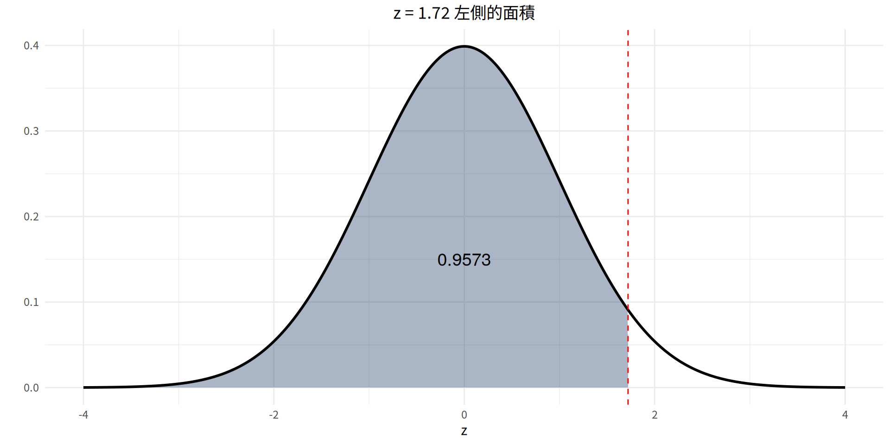
範例 6-2
某 z 值右側的面積
求標準常態分佈曲線下、z = -0.83 右側的面積。
範例 6-2
範例 6-2
解題
繪製圖形
ggplot(normal_curve, aes(z, density)) +
geom_area(data = filter(normal_curve, z >= -0.83),
fill = "#2c4a6e", alpha = 0.4) +
geom_line(linewidth = 1) +
geom_vline(xintercept = -0.83, linetype = "dashed", colour = "red") +
annotate("text", x = 1, y = 0.15, label = "0.7967", size = 5) +
labs(title = "z = -0.83 右側的面積", x = "z", y = "")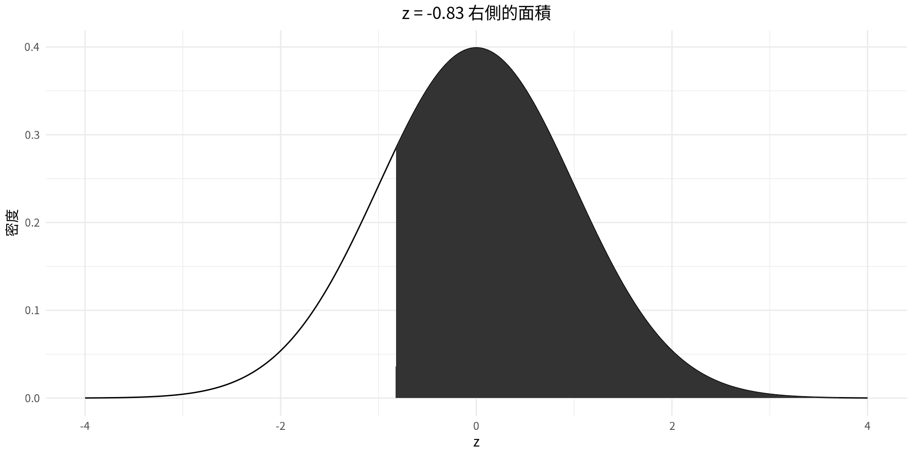
範例 6-3
兩個 z 值之間的面積
求標準常態分佈曲線下、z = 1.21 與 z = -1.54 之間的面積。
範例 6-3
範例 6-3
解題
繪製圖形
ggplot(normal_curve, aes(z, density)) +
geom_area(data = filter(normal_curve, z >= -1.54, z <= 1.21),
fill = "#2c4a6e", alpha = 0.4) +
geom_line(linewidth = 1) +
geom_vline(xintercept = c(-1.54, 1.21), linetype = "dashed",
colour = "red") +
annotate("text", x = 0, y = 0.15, label = "0.8251", size = 5) +
labs(title = "z = -1.54 與 z = 1.21 之間的面積", x = "z", y = "")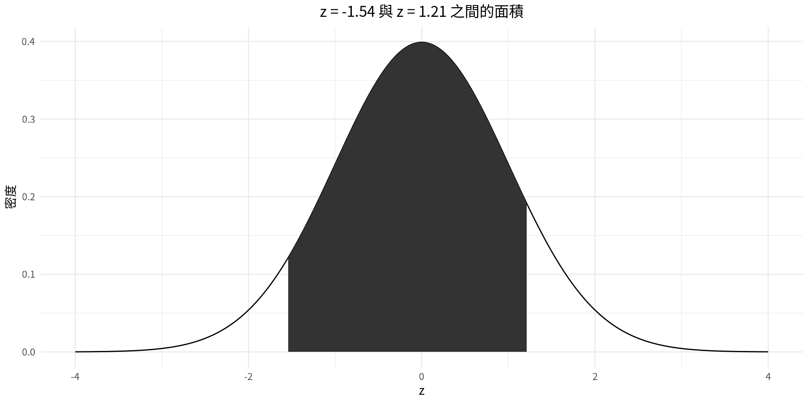
常態分佈曲線作為機率分佈曲線
標準常態分佈曲線下的面積也可以視為機率，或視為具有某項特徵之母體比例。若可隨機抽取一個 z 值，抽到介於 0 與 2.00 之間的機率，就等於曲線下介於 0 與 2.00 的面積，即 0.4772。
表示機率時採用特殊記法：z 值介於 0 與 2.32 之間的機率寫成 P(0 < z < 2.32)。
注意
在連續分佈中，任一個確切 z 值的機率為 0，因為其面積是一條垂直線，理論上沒有面積。因此 P(a \leq z \leq b) = P(a < z < b)。
範例 6-4
標準常態分佈的機率
求下列各機率。（假設為標準常態分佈。）
(a) P(0 < z < 2.14) (b) P(z < 1.35) (c) P(z > 2.27)
範例 6-4
解題
(a) 求 z = 0 與 z = 2.14 之間的面積。z = 2.14 的面積為 0.9838，z = 0 的面積為 0.5000：0.9838 - 0.5000 = 0.4838，即 48.38\%。
(b) 求 z = 1.35 左側的面積，為 0.9115，故機率為 0.9115，即 91.15\%。
(c) 求 z = 2.27 右側的面積。z = 2.27 的面積為 0.9884，故 1.0000 - 0.9884 = 0.0116，即 1.16\%。
範例 6-5
由指定面積求 z 值
求 z 值，使得標準常態分佈曲線下、0 與該 z 值之間的面積為 0.3078。
範例 6-5
第 6-2 節：常態分佈的應用
常態分佈的應用
標準常態分佈曲線可用來解決各式各樣的實際問題，唯一的要求是該變數必須服從常態或近似常態分佈。解題時先將原變數轉換為標準常態變數：
z = \frac{\text{數值} - \text{平均數}}{\text{標準差}} \qquad\text{或}\qquad z = \frac{X - \mu}{\sigma}
程序表——求任一常態曲線下的面積
步驟 1 畫出常態曲線並將所求面積著色。
步驟 2 以公式 z = \dfrac{X - \mu}{\sigma} 將 X 值轉換為 z 值。
步驟 3 利用查表、計算機或軟體求出對應的面積。
在 R 中可省略轉換步驟：直接使用 pnorm(x, mean = mu, sd = sigma)。
範例 6-6
外送平台的配送時間
某外送平台在台北的訂單，自下單到送達門口的時間平均為 27 分鐘。假設該變數呈常態分佈且標準差為 4 分鐘。求配送時間少於 32 分鐘的訂單所佔百分比。（模擬資料）
範例 6-6
範例 6-6
解題
繪製圖形
normal_density_df <- function(mu, sigma) {
x <- seq(mu - 4 * sigma, mu + 4 * sigma, length.out = 400)
data.frame(x = x, density = dnorm(x, mu, sigma))
}
delivery_curve <- normal_density_df(delivery_mean, delivery_sd)
delivery_plot <- ggplot(delivery_curve, aes(x, density)) +
geom_area(data = filter(delivery_curve, x <= 32),
fill = "#2c4a6e", alpha = 0.4) +
geom_line(linewidth = 1) +
geom_vline(xintercept = 32, linetype = "dashed", colour = "red") +
annotate("text", x = 24, y = 0.03, label = "0.8944", size = 5) +
labs(title = "配送時間：P(X < 32)", x = "分鐘", y = "")範例 6-6
範例 6-7
電商平台的訂單金額
某台灣電商平台成交訂單的平均金額為 1{,}200 元。假設該變數近似常態分佈且標準差為 150 元。隨機選取一筆成交訂單，求其金額為
(a) 介於 1{,}050 元與 1{,}425 元之間；(b) 超過 1{,}380 元的機率。（模擬資料）
範例 6-7
解題 (a)
步驟 1 畫出常態曲線並將所求面積著色（圖 6-20）。
步驟 2 z_1 = \dfrac{1050 - 1200}{150} = -1.0，z_2 = \dfrac{1425 - 1200}{150} = 1.5
步驟 3 z_2 左側的面積為 0.9332，z_1 左側的面積為 0.1587，故兩者之間的面積為 0.9332 - 0.1587 = 0.7745，即機率 77.45\%。
範例 6-7
範例 6-7
解題
繪製圖形
order_curve <- normal_density_df(order_mean, order_sd)
between_plot <- ggplot(order_curve, aes(x, density)) +
geom_area(data = filter(order_curve, x >= 1050, x <= 1425),
fill = "#2c4a6e", alpha = 0.4) +
geom_line(linewidth = 1) +
labs(title = "(a) P(1050 < X < 1425) = 0.7745", x = "元", y = "")
upper_plot <- ggplot(order_curve, aes(x, density)) +
geom_area(data = filter(order_curve, x >= 1380),
fill = "#c0392b", alpha = 0.4) +
geom_line(linewidth = 1) +
labs(title = "(b) P(X > 1380) = 0.1151", x = "元", y = "")範例 6-7
範例 6-8
揀貨時間
桃園某物流中心揀取並包裝一筆訂單的時間平均為 6.4 分鐘。假設該變數近似常態分佈且母體標準差為 0.8 分鐘。若隨機選取 60 筆訂單，大約有多少筆的揀貨包裝時間少於 5.8 分鐘？（模擬資料）
範例 6-8
解題
步驟 1 畫出常態曲線並將所求面積著色（圖 6-24）。
步驟 2 z = \dfrac{5.8 - 6.4}{0.8} = -0.75
步驟 3 z = -0.75 對應的面積為 0.2266。
筆數為 60 \times 0.2266 = 13.6，四捨五入得 14。隨機選取的 60 筆訂單中，約有 14 筆的揀貨包裝時間少於 5.8 分鐘。
[1] 0.2266[1] 13.6注意： 遇到百分比的題目，務必先將百分比化為小數再相乘，並視需要四捨五入至整數。
由指定機率求資料值
常態分佈也可由指定的百分比反求特定的資料值。由 z = \dfrac{X-\mu}{\sigma} 解出 X 可得：
求常態變數 X 之值的公式
X = z \cdot \sigma + \mu
程序表——由指定機率求資料值
步驟 1 畫出常態曲線，並將代表該機率、比例或百分位數的面積著色。
步驟 2 由表中找出對應該面積的 z 值。
步驟 3 以公式 X = z\sigma + \mu 計算 X 值。
範例 6-9
外送員獎金的門檻
某外送平台每季發放獎金給每月完成訂單數排名前 10\% 的外送員。假設每月完成訂單數呈常態分佈，平均數為 480、標準差為 60。求可獲得獎金的最低完成訂單數。（模擬資料）
範例 6-9
解題
步驟 1 反向思考。以 1.0000 減去 0.1000 得 X 左側的面積：1.0000 - 0.1000 = 0.9000（圖 6-26）。
步驟 2 在表 A-4 的面積欄中查 0.9000。表值四捨五入為 z = 1.28；精確計算則為 z = 1.2816。
步驟 3 X = z \cdot \sigma + \mu = 1.2816(60) + 480 = 556.89。
由於訂單數不可能有小數，門檻應取 557：完成 557 筆以上的外送員即可獲得獎金。
範例 6-10
捷運車站的每日運量
某運輸規劃人員想研究台北某捷運站平日運量居中 60\% 的日子。假設平日進站人次呈常態分佈，平均數為 48 千人次、標準差為 5 千人次。
(a) 運量最低 20\% 的平日，其進站人次為何？
(b) 求運量居中 60\% 的平日，其進站人次的下限與上限。（模擬資料）
範例 6-10
解題 (a)
步驟 1 畫出曲線並將最低的 20\% 著色（圖 6-28）。
步驟 2 左側面積為 0.2000 的 z 值為 z = -0.8416（表 A-4 四捨五入為 -0.84）。
步驟 3 X = z\sigma + \mu = (-0.8416)(5) + 48 = 43.79
運量最低的 20\% 平日，進站人次少於 43.79 千人次。
範例 6-10
解題 (b)
步驟 1 需要兩個值，一個在平均數之上、一個在平均數之下（圖 6-29）。
步驟 2 正 z 值左側的面積為 0.5000 + 0.3000 = 0.8000。左側面積 0.8000 對應的 z 值為 0.8416，左側面積 0.2000 對應的 z 值為 -0.8416。
步驟 3 X_1 = (-0.8416)(5) + 48 = 43.79，X_2 = (0.8416)(5) + 48 = 52.21。
運量居中 60\% 的平日，進站人次介於 43.79 與 52.21 千人次之間。
常態性的判定
鐘形分佈只是眾多分佈形狀之一，但它極為重要，因為許多統計方法都要求資料的分佈為常態或近似常態。統計學家以多種方式檢查常態性。
檢查資料集是否為常態
- 直方圖。 繪製直方圖並檢視其形狀。若不近似鐘形，則資料非常態分佈。
- 皮爾森偏態係數（PC），又稱 皮爾森偏態指數： PC = \frac{3(\bar{X} - \text{中位數})}{s} 若指數大於或等於 +1，或小於或等於 -1，則資料顯著偏斜。
- 離群值。 以第3章的方法檢查離群值：低於 Q_1 或高於 Q_3 達 1.5(IQR) 以上者。即使只有一兩個離群值，也可能大幅影響常態性。
範例 6-11
供應商的備料天數
某貿易公司記錄了 18 家供應工廠的成品庫存天數。判斷這組資料是否近似常態分佈。（模擬資料）
12 21 26 33 35 38 42 45 47
49 52 56 59 63 68 74 81 93範例 6-11
解題
步驟 1 建立次數分配表並繪製直方圖（圖 6-30）。
lead_days <- c(12, 21, 26, 33, 35, 38, 42, 45, 47,
49, 52, 56, 59, 63, 68, 74, 81, 93)
lead_breaks <- seq(9.5, 99.5, by = 15)
lead_labels <- c("10-24", "25-39", "40-54", "55-69", "70-84", "85-99")
lead_freq <- data.frame(
Class = lead_labels,
Frequency = as.integer(table(cut(lead_days, lead_breaks, labels = lead_labels))))
knitr::kable(lead_freq, align = "c")| Class | Frequency |
|---|---|
| 10-24 | 2 |
| 25-39 | 4 |
| 40-54 | 5 |
| 55-69 | 4 |
| 70-84 | 2 |
| 85-99 | 1 |
範例 6-11
範例 6-11
解題
步驟 2 檢查偏斜程度：\bar{X} = 49.67、中位數 = 48、s = 21.17，故 PC = \frac{3(49.67 - 48)}{21.17} = 0.236 PC 既不大於 +1 也不小於 -1，故此分佈未顯著偏斜。
範例 6-11
解題
步驟 3 檢查離群值：Q_1 = 35.75、Q_3 = 62，故 IQR = 26.25。離群值須低於 35.75 - 1.5(26.25) = -3.62 或高於 62 + 1.5(26.25) = 101.38，故沒有離群值。
mean median s
49.67 48.00 21.17 [1] 0.236 25% 75% IQR
35.75 62.00 26.25 25% 75%
-3.62 101.38 鐘形、未顯著偏斜、無離群值：此分佈近似常態分佈。
範例 6-12
夜市攤位的來客數
下列資料為某夜市攤位在 17 個隨機選出的夜晚所服務的來客數。判斷這組資料是否近似常態分佈。（模擬資料）
142 95 131 152 108 145
149 25 139 118 151 135
125 60 147 78 42範例 6-12
解題
步驟 1 建立次數分配表並繪製直方圖（圖 6-31）。
customers <- c(142, 95, 131, 152, 108, 145,
149, 25, 139, 118, 151, 135,
125, 60, 147, 78, 42)
customer_breaks <- seq(24.5, 174.5, by = 25)
customer_labels <- c("25-49", "50-74", "75-99", "100-124", "125-149", "150-174")
customer_freq <- data.frame(
Class = customer_labels,
Frequency = as.integer(table(cut(customers, customer_breaks,
labels = customer_labels))))
knitr::kable(customer_freq, align = "c")| Class | Frequency |
|---|---|
| 25-49 | 2 |
| 50-74 | 1 |
| 75-99 | 2 |
| 100-124 | 2 |
| 125-149 | 8 |
| 150-174 | 2 |
範例 6-12
範例 6-12
解題
步驟 2 檢查偏斜程度：\bar{X} = 114.24、中位數 = 131、s = 40.37，故 PC = \frac{3(114.24 - 131)}{40.37} = -1.25 由於 PC 小於 -1，此分佈顯著左偏。
範例 6-12
解題
步驟 3 檢查離群值：Q_1 = 95、Q_3 = 145、IQR = 50。低於 95 - 1.5(50) = 20 或高於 145 + 1.5(50) = 220 者為離群值，故沒有離群值。
mean median s
114.24 131.00 40.37 [1] -1.2525% 75% IQR
95 145 50 25% 75%
20 220 總結而言，此分佈顯著左偏。
以 R 繪製常態分位圖
另一種檢查常態性的方法是繪製常態分位圖。分位數（有時稱為分割數）是把資料集分成大致相等群組的數值。常態分位圖將資料值對應到各分位數的 z 值上作圖。若各點未大致落在一條直線上，即可否定常態性。
quantile_plot <- function(values, title)
ggplot(data.frame(values), aes(sample = values)) +
stat_qq(colour = "#2c4a6e") + stat_qq_line(colour = "red") +
labs(title = title, x = "理論分位數 (z)", y = "樣本分位數")
grid.arrange(quantile_plot(lead_days, "範例 6-11：供應商備料天數"),
quantile_plot(customers, "範例 6-12：夜市攤位來客數"), ncol = 2)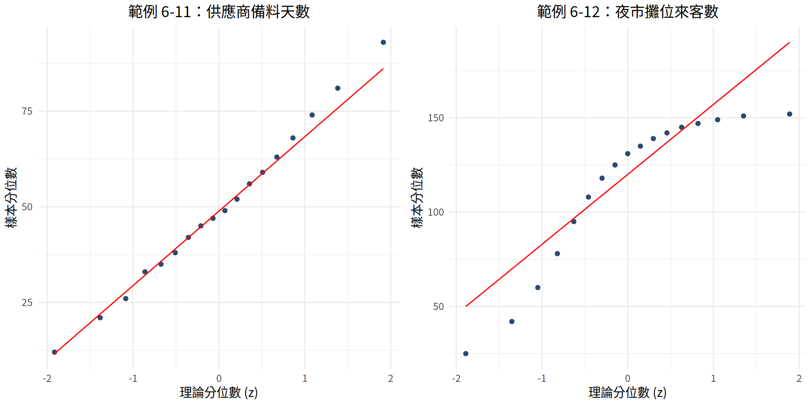
其他方法還包括常態機率座標紙、卡方適合度檢定（第11章）、Kolmogorov-Smirnov 檢定與 Lilliefors 檢定。
第 6-3 節：中央極限定理
樣本平均數的分佈
除了瞭解個別資料值如何圍繞母體平均數變動之外，統計學家也想知道由同一母體抽出、大小相同的各樣本平均數如何圍繞母體平均數變動。
假設分析師抽取 30 筆網路訂單為一樣本，得平均訂單金額 1{,}180 元；再抽第二個樣本，平均值為 1{,}215 元；如此持續進行 100 個樣本。此時平均數成為一個隨機變數，而這些樣本平均數 1{,}180, 1{,}215, 1{,}164, \ldots, 1{,}232 即構成樣本平均數的抽樣分佈。
樣本平均數的抽樣分佈
樣本平均數的抽樣分佈是由某一母體中所有可能的特定大小隨機樣本所計算出的平均數所構成的分佈。
抽樣誤差
若樣本是取出放回隨機抽取，則樣本平均數多半會與母體平均數 \mu 有些差異，這些差異即由抽樣誤差造成。
抽樣誤差
抽樣誤差是樣本測量值與對應母體測量值之間的差異，肇因於樣本並非母體的完美代表。
樣本平均數分佈的性質
- 樣本平均數的平均數等於母體平均數。
- 樣本平均數的標準差小於母體標準差，且等於母體標準差除以樣本大小的平方根。
十分小考的示範
某講師對一班四位學生進行滿分 10 分的小考，成績為 3、5、7、9。將這四位學生視為母體。
mean sd
6.000 2.236 原分佈的圖形為均勻分佈（圖 6-32）：每個分數各出現一次。
十分小考的示範
取出放回抽取所有大小為 2 的樣本，並計算各樣本的平均數：
十分小考的示範
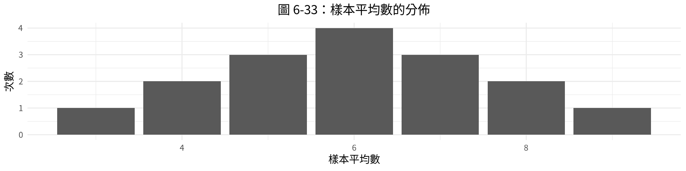
[1] 6[1] 1.581[1] 1.581樣本平均數的直方圖近似常態，樣本平均數的平均數等於母體平均數，樣本平均數的標準差則等於 \sigma/\sqrt{n}。
平均數的標準誤
平均數的標準誤
若自同一母體取出放回抽取所有大小為 n 的樣本，則樣本平均數的平均數 \mu_{\bar{X}} 等於母體平均數 \mu；樣本平均數的標準差 \sigma_{\bar{X}} 等於 \sigma/\sqrt{n}。樣本平均數的標準差稱為平均數的標準誤。
樣本平均數的平均數與標準誤
\mu_{\bar{X}} = \mu \qquad\qquad \sigma_{\bar{X}} = \frac{\sigma}{\sqrt{n}}
中央極限定理
樣本平均數抽樣分佈的第三個性質與分佈的形狀有關，由中央極限定理說明。
中央極限定理
當樣本大小 n 無限制地增大時，自平均數為 \mu、標準差為 \sigma 的母體取出放回抽樣所得之樣本平均數，其分佈形狀將趨近常態分佈。此分佈的平均數為 \mu，標準差為 \sigma/\sqrt{n}。
中央極限定理的 z 值
z = \frac{\bar{X} - \mu}{\sigma/\sqrt{n}}
由於使用的是平均數而非個別資料值，分母必須調整為樣本平均數的標準差。
兩項必記要點
中央極限定理的適用時機
- 當原變數服從常態分佈時，樣本平均數的分佈對任何樣本大小 n 都是常態分佈。
- 當原變數的分佈非常態時，需要樣本大小達 30 以上，才能以常態分佈近似樣本平均數的分佈。樣本愈大，近似愈佳。
在 R 中： 使用 pnorm(xbar, mean = mu, sd = sigma / sqrt(n))。
以 R 展示中央極限定理
set.seed(42)
skewed_means <- function(n) # rate = 0.5 的母體高度偏斜
data.frame(sample_mean = colMeans(matrix(rexp(n * 2000, rate = 0.5), nrow = n)),
size = paste("n =", n))
simulation <- bind_rows(skewed_means(2), skewed_means(10), skewed_means(30))
ggplot(simulation, aes(sample_mean)) +
geom_histogram(bins = 40, fill = "#2c4a6e", colour = "white") +
facet_wrap(~ factor(size, levels = c("n = 2", "n = 10", "n = 30")),
scales = "free") +
labs(title = "樣本數愈大，樣本平均數愈趨近常態",
x = "樣本平均數", y = "次數")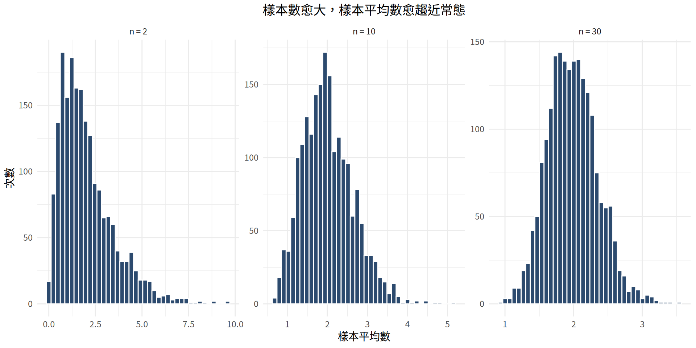
範例 6-13
客服來電的通話時間
某網路零售商客服中心的來電通話時間平均為 4.5 分鐘。假設該變數呈常態分佈且標準差為 1.25 分鐘。若隨機選取 25 通來電，求其平均通話時間超過 5.0 分鐘的機率。（模擬資料）
範例 6-13
解題
由於變數近似常態分佈，樣本平均數的分佈亦近似常態，其平均數為 4.5，標準誤為
\sigma_{\bar{X}} = \frac{\sigma}{\sqrt{n}} = \frac{1.25}{\sqrt{25}} = 0.25
步驟 1 畫出常態曲線並將所求面積著色（圖 6-35）。
步驟 2 z = \dfrac{\bar{X} - \mu}{\sigma/\sqrt{n}} = \dfrac{5.0 - 4.5}{0.25} = 2.00
步驟 3 2.00 右側的面積為 1.0000 - 0.9772 = 0.0228，即 2.28\%。
[1] 0.25[1] 0.0228這 25 通來電平均通話時間超過 5.0 分鐘的機率為 2.28%。
範例 6-14
每車每日配送件數
某快遞公司的貨車平均每日配送 120 件包裹。假設標準差為 18 件。若隨機抽取 36 個車日，求樣本平均數介於 114 件與 123 件之間的機率。（模擬資料）
範例 6-14
解題
步驟 1 畫出常態曲線並將所求面積著色（圖 6-36）。由於樣本數在 30 以上，不需要常態性假設。
步驟 2 標準誤為 18/\sqrt{36} = 3，故 z_1 = \dfrac{114 - 120}{3} = -2，z_2 = \dfrac{123 - 120}{3} = 1。
步驟 3 z = -2 的面積為 0.0228，z = 1 的面積為 0.8413，故兩者之間的面積為 0.8413 - 0.0228 = 0.8186，即 81.86\%。
範例 6-15
進口報關時間
進入台灣港口的進口貨物，平均需 3.2 天完成通關。假設其分佈近似常態且標準差為 0.5 天。
(a) 求隨機選取一批貨物，其通關時間少於 3.3 天的機率。
(b) 若隨機抽取 36 批貨物，求樣本平均通關時間少於 3.3 天的機率。（模擬資料）
範例 6-15
範例 6-15
解題 (b)
由於問的是樣本數 36 的樣本平均數，使用中央極限定理的公式 z = \dfrac{\bar{X} - \mu}{\sigma/\sqrt{n}}（圖 6-38）。
步驟 2 z = \dfrac{3.3 - 3.2}{0.5/\sqrt{36}} = 1.20
步驟 3 z = 1.20 對應的面積為 0.8849，即 88.49\%。
[1] 0.0833[1] 0.8849- 與 (b) 相差約 30.6 個百分點，原因在於樣本平均數的分佈比個別資料值的分佈離散得多：樣本數愈大，平均數的標準差就愈小。
表 6-1
表 6-1 公式與用途總整理
| 公式 | 用途 |
|---|---|
| z = \dfrac{X - \mu}{\sigma} | 當變數服從常態分佈時，用以取得個別資料值的資訊 |
| z = \dfrac{\bar{X} - \mu}{\sigma/\sqrt{n}} | 當變數服從常態分佈或樣本數達 30 以上時，用以依中央極限定理取得樣本平均數的資訊 |
注意第一個公式含 X，即個別資料值；第二個公式含 \bar{X}，即樣本平均數。
有限母體校正因子（選讀）
平均數標準誤的公式 \sigma/\sqrt{n} 適用於取出放回抽樣，或自極大（無限）母體不放回抽樣的情形。若為自有限母體不放回抽樣，則必須乘上校正因子。
有限母體校正因子
\sqrt{\frac{N-n}{N-1}}
其中 N 為母體大小、n 為樣本大小。標準誤與 z 值成為
\sigma_{\bar{X}} = \frac{\sigma}{\sqrt{n}} \cdot \sqrt{\frac{N-n}{N-1}} \qquad\qquad z = \frac{\bar{X} - \mu}{\dfrac{\sigma}{\sqrt{n}} \cdot \sqrt{\dfrac{N-n}{N-1}}}
有限母體校正因子（選讀）
注意
當自小母體抽取相對大的樣本——通常超過母體的 5\%——時才需要校正因子。若母體大而樣本小，因子極接近 1.00，一般不予使用。
第 6-4 節：二項分佈的常態近似
為何使用常態近似？
當 n 很大（例如 100）時，二項分佈的計算以手算過於困難，故改用常態分佈求解。回顧第5章，二項分佈具有下列特性：
- 必須有固定的試驗次數。
- 各次試驗的結果必須互相獨立。
- 每次試驗只能有兩種結果，或可化簡為兩種結果。
- 每次試驗的成功機率必須維持不變。
當 p 接近 0.5 且 n 增大時，二項分佈的形狀愈來愈像常態分佈。但當 p 接近 0 或 1 且 n 相對較小時，常態近似並不準確。
np \geq 5 與 nq \geq 5 的條件
經驗法則
唯有當 n \cdot p 與 n \cdot q 兩者皆大於或等於 5 時，才應使用常態近似，其中 q = 1 - p。
此外，\mu = n \cdot p，\sigma = \sqrt{n \cdot p \cdot q}。
例如 p = 0.3、n = 10 時，np = 3，不應使用常態分佈；若 p = 0.5、n = 10，則 np = nq = 5，可以使用。
np \geq 5 與 nq \geq 5 的條件（續）
binomial_shapes <- rbind(
data.frame(x = 0:10, probability = dbinom(0:10, 10, 0.3),
label = "n = 10, p = 0.3 (np = 3)"),
data.frame(x = 0:10, probability = dbinom(0:10, 10, 0.5),
label = "n = 10, p = 0.5 (np = 5, nq = 5)"))
ggplot(binomial_shapes, aes(x, probability)) +
geom_col(fill = "#2c4a6e", width = 0.7) + facet_wrap(~ label) +
labs(title = "圖 6-39：二項分佈與常態分佈的比較",
x = "X", y = "P(X)")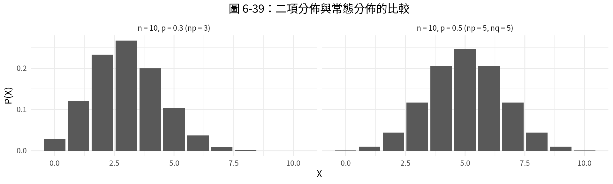
連續性修正
連續性修正
連續性修正是以連續分佈近似離散分佈時所採用的修正。
連續性修正的意思是：對任一特定的 X 值（例如 8），必須使用二項分佈中該值的組界（此例為 7.5 到 8.5）。P(X = 8) 修正為 P(7.5 < X < 8.5)；P(X \leq 7) 修正為 P(X < 7.5)；P(X \geq 3) 修正為 P(X > 2.5)。
表 6-2
表 6-2 二項分佈常態近似總整理
| 欲求（二項） | 改用（常態） |
|---|---|
| 1. P(X = a) | P(a - 0.5 < X < a + 0.5) |
| 2. P(X \geq a) | P(X > a - 0.5) |
| 3. P(X > a) | P(X > a + 0.5) |
| 4. P(X \leq a) | P(X < a + 0.5) |
| 5. P(X < a) | P(X < a - 0.5) |
所有情形皆有 \mu = n \cdot p、\sigma = \sqrt{n \cdot p \cdot q}、n \cdot p \geq 5 且 n \cdot q \geq 5。
程序表
二項分佈常態近似的程序
步驟 1 檢查是否可使用常態近似。
步驟 2 求平均數 \mu 與標準差 \sigma。
步驟 3 以 X 寫出機率式。
步驟 4 以連續性修正因子改寫問題，並畫出常態分佈下對應的面積。
步驟 5 求對應的 z 值。
步驟 6 求解。
範例 6-16
超商取貨
某跨境電商平台的買家中，有 30\% 選擇超商取貨而非宅配到府。若隨機選取 150 位買家，求其中恰有 52 位選擇超商取貨的機率。（模擬資料）
範例 6-16
解題
此處 p = 0.30、q = 0.70、n = 150。
步驟 1 np = (150)(0.30) = 45，nq = (150)(0.70) = 105。因 np \geq 5 且 nq \geq 5，可使用常態分佈。
步驟 2 \mu = np = 45，\sigma = \sqrt{npq} = \sqrt{(150)(0.30)(0.70)} = \sqrt{31.5} \approx 5.61
步驟 3 P(X = 52)
步驟 4 依表 6-2 的第 1 種情形：P(51.5 < X < 52.5)（圖 6-40）。
步驟 5 z_1 = \dfrac{51.5 - 45}{5.61} \approx 1.16，z_2 = \dfrac{52.5 - 45}{5.61} \approx 1.34
步驟 6 z_1 與 z_2 之間的面積為 0.0327，約 3.27\%。
範例 6-16
解題
以 R 計算
np nq sigma
45.00 105.00 5.61 [1] 0.0327[1] 0.032常態近似的結果為 0.0327，精確的二項機率則為 0.032。
範例 6-17
退貨訂單
某網路商城的訂單中有 15\% 會被退貨。若隨機選取 240 筆訂單，求其中有 24 筆以上被退貨的機率。（模擬資料）
範例 6-17
解題
步驟 1 此處 p = 0.15、q = 0.85、n = 240。因 np = (240)(0.15) = 36 且 nq = (240)(0.85) = 204，可使用常態近似。
步驟 2 \mu = np = 36，\sigma = \sqrt{npq} = \sqrt{(240)(0.15)(0.85)} = \sqrt{30.6} \approx 5.53
步驟 3 P(X \geq 24)
步驟 4 依表 6-2 的第 2 種情形：P(X > 24 - 0.5) = P(X > 23.5)（圖 6-41）。
步驟 5 z = \dfrac{23.5 - 36}{5.53} \approx -2.26
步驟 6 該 z 值右側的面積為 0.9881，即 98.81\%。
範例 6-17
解題
以 R 計算
np nq sigma
36.00 204.00 5.53 [1] 0.9881[1] 0.991隨機選取 240 筆訂單中有 24 筆以上被退貨的機率為 98.81%；精確的二項機率為 0.991。
範例 6-18
行動支付
某百貨公司的店內調查發現，有 45\% 的顧客使用行動支付付款。求隨機選取 120 位顧客中，至多 48 位使用行動支付的機率。（模擬資料）
範例 6-18
解題
步驟 1 此處 p = 0.45、q = 0.55、n = 120，故 np = 54、nq = 66。兩者皆大於或等於 5，可使用常態近似。
步驟 2 \mu = np = 54，\sigma = \sqrt{npq} = \sqrt{(120)(0.45)(0.55)} \approx 5.45
步驟 3 P(X \leq 48)，加入修正因子後成為 P(X < 48 + 0.5) = P(X < 48.5)（圖 6-42）。
步驟 4 z = \dfrac{48.5 - 54}{5.45} \approx -1.01
步驟 5 該 z 值左側的面積為 0.1564，即 15.64\%。
120 位顧客中至多 48 位使用行動支付的機率為 15.64%。
範例 6-18
解題
以 R 計算
np nq sigma
54.00 66.00 5.45 [1] 0.1564[1] 0.1564範例 6-19
二項分佈與常態近似的比較
當 n = 12、p = 0.5 時，先以二項分佈表（附錄 A 的表 A-2）求 X = 8 的機率，再以常態近似求 X = 8 的機率。
範例 6-19
解題
由表 A-2 查 n = 12、p = 0.5、X = 8，機率為 0.121。
若以常態近似，\mu = np = (12)(0.5) = 6，\sigma = \sqrt{npq} = \sqrt{(12)(0.5)(0.5)} = \sqrt{3} \approx 1.73。
此時 X = 8 以組界 7.5 與 8.5 表示，故
z_1 = \frac{7.5 - 6}{1.73} \approx 0.87 \qquad z_2 = \frac{8.5 - 6}{1.73} \approx 1.44
兩組界之間的面積為 0.1188——與精確二項機率 0.1208 非常接近（圖 6-43）。
範例 6-19
解題
以 R 計算
np nq sigma
6.00 6.00 1.73 [1] 0.1208[1] 0.1188範例 6-19
注意
此處 np = 6、nq = 6——僅略高於最低門檻 5。n 較小時常態近似的準確度可能較差，但 0.1188 仍與精確值 0.1208 相當接近。
常態分佈也可用來近似其他分佈，例如卜瓦松分佈（附錄 A 的表 A-3）。
重要名詞
第6章詞彙
中央極限定理 · 連續性修正 · 負偏（左偏）分佈 · 常態分佈 · 正偏（右偏）分佈 · 樣本平均數的抽樣分佈 · 抽樣誤差 · 平均數的標準誤 · 標準常態分佈 · 對稱分佈 · z 值（z 分數）
重要公式
常態分佈
常態分佈與標準常態分佈的方程式： y = \frac{e^{-(X-\mu)^2/(2\sigma^2)}}{\sigma\sqrt{2\pi}} \qquad\qquad y = \frac{e^{-z^2/2}}{\sqrt{2\pi}}
z 分數（標準分數）公式，以及求特定資料值的公式： z = \frac{X - \mu}{\sigma} \qquad\qquad X = z \cdot \sigma + \mu
重要公式
樣本平均數與二項分佈的常態近似
樣本平均數的平均數與平均數的標準誤： \mu_{\bar{X}} = \mu \qquad\qquad \sigma_{\bar{X}} = \frac{\sigma}{\sqrt{n}}
中央極限定理的 z 值，以及有限母體校正因子： z = \frac{\bar{X} - \mu}{\sigma/\sqrt{n}} \qquad\qquad \sqrt{\frac{N-n}{N-1}}
二項分佈的平均數與標準差： \mu = n \cdot p \qquad\qquad \sigma = \sqrt{n \cdot p \cdot q}
皮爾森偏態係數：PC = \dfrac{3(\bar{X} - \text{中位數})}{s}
重點整理
重點
- 常態分佈為連續、鐘形、單峰且對稱；其平均數、中位數與眾數相等，曲線下總面積為 1，且曲線永不接觸 x 軸
- 距平均數 1、2、3 個標準差內的面積分別約為 68\%、95\%、99.7\%
- 標準常態分佈的 \mu = 0、\sigma = 1；任何常態變數可用 z = \dfrac{X-\mu}{\sigma} 轉換，亦可用 X = z\sigma + \mu 反求資料值
- 標準常態曲線下的面積即為機率；因分佈為連續，故 P(a \leq z \leq b) = P(a < z < b)
- 常態性的檢查方式包括直方圖、皮爾森偏態指數 PC = \dfrac{3(\bar{X}-\text{中位數})}{s}（PC \geq +1 或 PC \leq -1 即為顯著偏斜）、離群值檢查與常態分位圖
重點整理
重點
- 樣本平均數的抽樣分佈由所有可能之特定大小樣本的平均數構成；\mu_{\bar{X}} = \mu，標準誤為 \sigma_{\bar{X}} = \sigma/\sqrt{n}
- 中央極限定理指出，當 n 無限制增大時，樣本平均數的分佈趨近常態分佈——母體為常態時對任何 n 皆成立，否則需 n \geq 30
- 自有限母體不放回抽取超過母體 5\% 的樣本時，需使用有限母體校正因子 \sqrt{\dfrac{N-n}{N-1}}
- 二項分佈的常態近似須滿足 np \geq 5 且 nq \geq 5，其中 \mu = np、\sigma = \sqrt{npq}
- 以連續分佈近似離散分佈時，務必套用連續性修正（\pm 0.5）
Acknowledgement
Copyright notice. These teaching materials follow the organization and terminology of Bluman, A. G. (2023). Elementary statistics: A step by step approach (11th ed.). McGraw Hill. All rights in the original work are reserved by its authors and publishers.
Original examples. Every worked example, data set, and R script in these slides was written for this course. The data are hypothetical unless stated otherwise.
Non-commercial use only. These materials are strictly intended for educational purposes and must not be used for commercial gain or profit.
Proper attribution. Any reproduction, distribution, or use of these materials must provide proper attribution to the original source.

Elementary Statistics: A Step by Step Approach